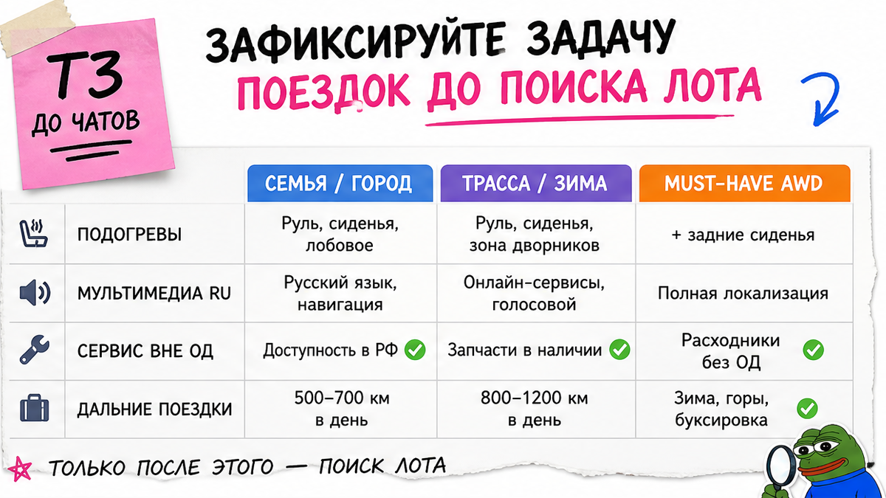
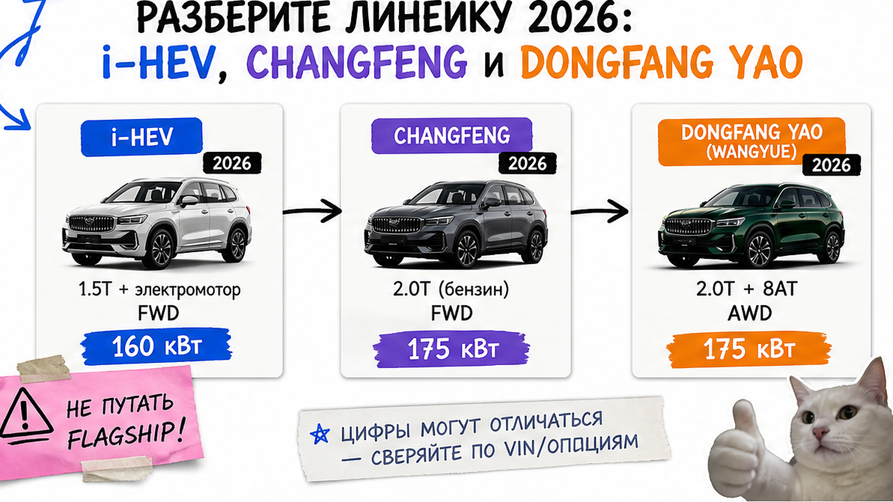
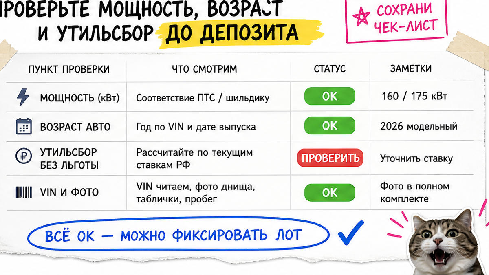

Семья уже почти внесла депозит за "Monjaro Flagship 4WD" у перекупа. Через два дня выяснилось: передний привод Changfeng без зимнего пакета, а смета "под ключ" – без коммерческого утильсбора. Типичная боль – перепутать китайский Xingyue L с дилерским Monjaro и оплатить не ту комплектацию. Ниже чеклист до депозита: задача → ветка → мощность → сверка лота → смета по строкам. После шагов вы сможете заполнить карточку и понять, платить сейчас нельзя.
TL;DR / Быстрый инсайт: В КНР модель – Xingyue L, в РФ – Monjaro. На 2026 у домашней линейки около восьми версий (i-HEV, Changfeng, Dongfang Yao), а полный привод Wangyue – не "по умолчанию у всех", а отдельная топ-версия. Льготного утильсбора "до 160 л.с." ждать не стоит. Депозит – только после сметы по строкам и зелёного чеклиста из 10 пунктов.
Мы в Авто-Сейлс во Владивостоке часто видим такие лоты. Честно говоря, фото кузова почти ничего не говорит о приводе и утиле. На практике сначала фиксируют задачу поездок, потом ветку мотора, и только потом смотрят ценник продавца.
Свежий ориентир на октябрь 2026: у Xingyue L уже восемь актуальных версий, а полный привод – не бонус "флагмана с объявления", а серия Wangyue. Если в заголовке "полный", а в спецификации FWD – это стоп.

Пока нет одного абзаца "зачем нам машина", ярлыки Flagship / Люкс / Exclusive звучат одинаково. Сделайте короткое ТЗ: семья, трасса, зима, нужен ли полный привод, готовность к сервису вне дилерской сети.
Например, если зимой нужны подогревы "из коробки", а русский язык в мультимедиа – must-have, дилерский канал и китайский лот решают задачу по-разному. Типичная ошибка – искать "самый навороченный Monjaro", а потом злиться на китайское меню и отсутствие CarPlay.
Сделайте это до чатов с продавцами. Не делайте вид, что "разберёмся по ходу" – на депозите уже поздно. Избегайте покупки "потому что красиво на фото".

Китайские названия путают даже тех, кто смотрел обзоры. Разложите ветки просто:
| Ветка 2026 | Мотор / коробка (ориентир) | Привод | Кому смотреть |
|---|---|---|---|
| i-HEV | 1.5T + электромотор, DHT; без зарядки от розетки | только FWD | город и расход, не AWD |
| Changfeng | 2.0T ~160 кВт / ~218 л.с., 7DCT | FWD | бензин без AWD-обязательства |
| Dongfang Yao | 2.0T ~200 кВт / ~272 л.с., 8AT | FWD; AWD только у Wangyue | мощнее мотор; AWD – отдельная проверка |
Схема выбора ветки:
Задача → нужен AWD? → да: только Wangyue с подтверждением → нет: i-HEV или Changfeng / Dongfang Yao → записать кВт + коробку в карточку лота
Дилерский Monjaro в РФ – отдельная история: ориентир 2.0 турбо до 238 л.с., 8AT и полный привод плюс адаптация под рынок. Китайский лот может быть богаче опциями, но зима, русификация и гарантия – другие правила.
Выберите ветку по таблице, а не по слову "флагман". Проверьте, что в карточке есть кВт и привод. Не делайте ставку на гибрид "ради льготной растаможки" – i-HEV берут ради расхода, не ради серой схемы.

Главный сюрприз: льготный утильсбор "до ~160 л.с. / 117,68 кВт" на практике к бензиновым Monjaro 160–200 кВт и к i-HEV не клеится. Для гибрида мощность считают жёстко (ДВС + 30-минутная мощность электромотора), а не по рекламным "пиковым л.с.".
Возраст (до/после 3 лет) тоже влияет на смету – это фактор, а не мелочь "потом посчитаем". Готовые суммы пошлин и утиля здесь не публикуем: актуальный расчёт – в каталоге под ваш лот.
Проверьте кВт до перевода. Избегайте депозита по фразе "утиль потом разберёмся". Ориентир: льготу обещают на словах, а в спеке 160+ кВт – красный флаг.
Представьте объявление: "Flagship 4WD, всё есть". В реальном проекте подбора мы сначала сверяем CN-серию, привод, коробку, подогревы, HUD и ADAS с фото и спекой. Нет расшифровки ярлыка – нет оплаты.
| Критерий | Китайский Xingyue L | Дилерский Monjaro в РФ |
|---|---|---|
| Зима | часто опционально; сверять подогревы | обычно сильнее адаптирован под РФ |
| Мультимедиа | китайская экосистема; русский и CarPlay – зона риска | русификация и штатный CarPlay чаще "из коробки" |
| Гарантия | CN-гарантия в РФ обычно не как у ОД | ориентир порядка 5 лет / 150 000 км |
| Опции | часто богаче "на бумаге" | стабильнее сервисная экосистема |
Перепрошивка китайской мультимедиа у частников тянет на десятки тысяч рублей и риск потери функций – не "лёгкий апгрейд в подарок".
Используйте таблицу как фильтр канала. Сделайте сверку ярлыка с CN-серией обязательной. Не делайте депозит по скрину салона без VIN.
Устная цена "под ключ" – главная ловушка. Соберите смету до депозита по строкам (без готовых цифр здесь):
Workflow сметы:
Авто в КНР → логистика КНР→РФ → таможня → утильсбор → СБКТС / ЭПТС / ЭРА-ГЛОНАСС → выдача по РФ → итог в каталоге
Семь вопросов подборщику, пока деньги ещё ваши:
Расчёт под лот – в каталоге avto-sales125.ru. Детали по карточке – в Telegram avtosales125. Форм на странице нет.
Соберите все строки до оплаты. Избегайте формулы "всё включено, Excel потом". Проверьте, что возраст и утиль не спрятаны в одной "общей" цифре.
Результат на сегодня: ни один пункт ниже не красный – или депозит откладывается. Это критерий "можно платить / нельзя".
Пройдите чеклист сверху вниз. Не делайте исключений "только сегодня". Если застряли на пунктах 3–4 – сначала закройте привод и кВт.
После этих действий вы сможете остановить ошибочный депозит и принести подборщику рабочую карточку лота – понятный первый результат без лишней спешки.
Материал проверен: Редакция Авто-Сейлс (эксперты по авто под заказ из Японии, Кореи и Китая).
Достоверность: линейка Xingyue L / Monjaro 2026 сверена с официальным CN-каталогом Geely, страницей дилерского Monjaro, сводками комплектаций и разборами ZR / импортёров по утильсбору и отличиям CN vs ОД (доступ 22.10.2026); актуальные расчёты под лот – только в каталоге, без статичного калькулятора сумм в статье.
В КНР это Xingyue L: другие ветки моторов, часто богаче опции, но зима, русский язык, CarPlay и гарантия ОД – не "как у дилера автоматом". Сделайте сверку по таблице и выберите канал осознанно.
Сначала решите, AWD – must-have или нет. Если да – только подтверждённый Wangyue. Если нет – FWD-ветки (i-HEV или Changfeng / Dongfang Yao без Wangyue). Не делайте ставку на слово "полный" в заголовке.
Да: 1.5T + электромотор, DHT, только FWD, без зарядки от сети. Берите ради расхода. Избегайте обещаний, что гибрид "дешевле растаможить по льготе".
VIN и фото, подтверждение привода, строку утильсбора, срок, гарантию/сервис, кто делает СБКТС/ЭПТС, что если лот не совпал с описанием. Проверьте ответы письменно. Нет ответов – нет депозита.
Бензиновые 2.0 уже около 160–200 кВт, а порог льготы в разборах 2026 ориентирован примерно на 117,68 кВт. У i-HEV льгота тоже обычно не сходится. Точную цифру просите в расчёте каталога.
Выпишите CN-серию, кВт, коробку, привод и опции. Сверьте с фото. Если ярлык не расшифровывают – откажитесь до перевода.